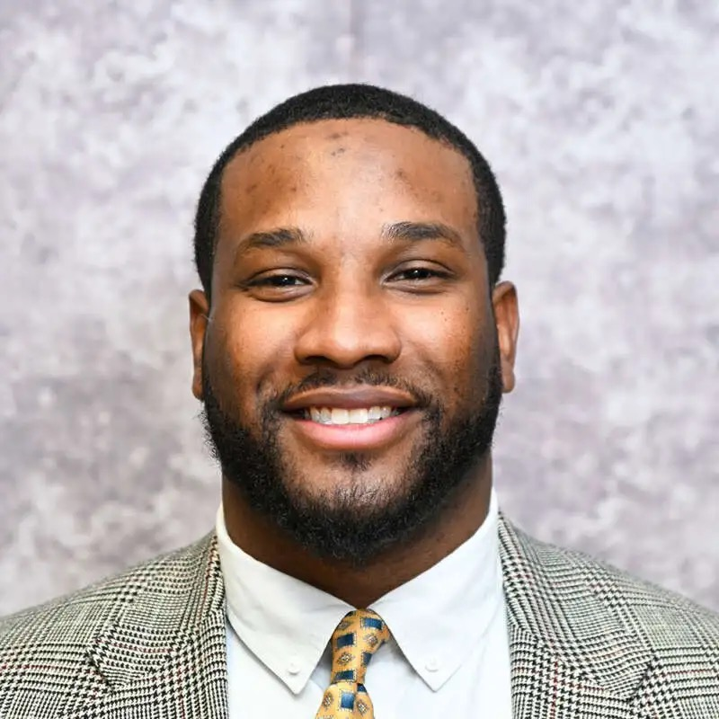
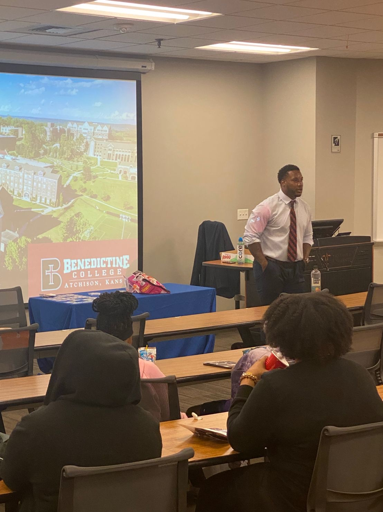

Institutional advising
Connect your mission to the student experience. Explore how advising, mentorship, and campus culture can work together.
- Student belonging & engagement
- Formation program design
- Reflection & assessment

FOR SCHOOLS, UNIVERSITIES & EDUCATORS
Help students discover who they are.
Build a culture that helps them become.
Character, belonging, and purpose at the heart of education. A whole-person perspective with Dr. Tyler Shephard.
Scholarship meets
the work of education.
01 / MEET TYLER
The question at the center of the work is simple: who are our students becoming?
Tyler is Associate Dean of Students and Director of the Center for Human Flourishing at Benedictine College. His work spans student success, belonging, retention, and the design of programs that put a college’s mission into practice.
He also teaches sociology and in Benedictine’s MACL Higher Education concentration. He holds an Ed.D. in Higher Education Leadership and Policy Studies from the University of Kansas, an MBA, and a bachelor’s degree in psychology from Benedictine College.
Read his official biography02 / WAYS TO WORK TOGETHER
Start with the people, challenges, and aspirations of your institution. Explore an engagement that fits.
Connect your mission to the student experience. Explore how advising, mentorship, and campus culture can work together.
Give faculty and staff a shared language for character and practical ways to use it in their daily work with students.
Consider a more intentional path from experience to self-knowledge, habits, accountability, and service.
Proposed areas for consultation. Scope, availability, and fees are established through conversation.
03 / FROM VALUES TO HABITS
Good intentions need a place in daily life. Begin with a real experience, reflect on the choice it presents, and commit to one concrete action.

15 weeks. A pathway from identity to practice.
A coaching model for freshman student-athletes that connects the experience of sport with the person beyond the performance. Explore the four phases.
BEGIN WITH WHO YOU WANT TO BECOME
Name the character qualities you want to develop, choose a trusted accountability partner, and identify an example worth following.
A written character goal, an accountability relationship, and one practice to begin.
Program framework: Center for Human Flourishing, Benedictine College. Presented as an example of institutional work, not a separately owned consulting product.
04 / IDEAS IN ACTION
Explore the programs and thinking that inform this perspective.
A look inside the college’s fellowship program and its focus on leadership, mentorship, and service.
Explore Freedom FellowsBenedictine’s announcement of the Center and Tyler’s leadership role.
Read the announcementExplore the Center’s coaching, mentoring, and educational programs.
Discover the CenterA FEW PRACTICAL QUESTIONS
School and university leaders, student affairs teams, faculty, staff, and educators interested in character, belonging, and whole-person development. An initial conversation can establish whether the need fits Tyler’s expertise.
Possible formats include an advising conversation, a faculty or staff workshop, a retreat, or help thinking through a formation program. These are proposed consulting formats; availability, deliverables, and fees must be confirmed directly.
Tyler’s institutional work at Benedictine is rooted in a Catholic understanding of the human person. The starting conversation should address your school’s mission and context, and how character, purpose, and service fit within them.
No. This is a personal consulting website concept. College roles, programs, photographs, and video are credited as professional background. They do not establish a college endorsement of an independent consulting practice.
05 / THE NEXT CONVERSATION
Tell Tyler about your institution, the challenge you’re facing, and what you hope will change.
Contact Tyler through BenedictineUse his verified college contact page while a dedicated consulting address is being established.
Create a short brief to copy into Tyler’s contact form.
This prepares text in your browser. Nothing is sent or stored by this website.